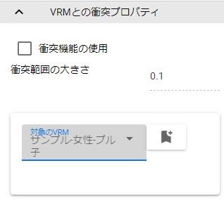

9.6. Effect
9.6.1. Main Properties

This is a special screen effect that animates, and settings related to effects.
- Genre:
Select the effect genre. (see below)
- Effect:
Select an effect for the selected genre.
- Preview:
Play/pause/stop the effect preview. Because it is a preview, it is not reflected in the animation project.
- Loop:
Play the effect forever.
- Effect status (for registration):
Register the playback status of the effect in the animation project.
Explosion |
explosive effects |
Smoke |
smoke and haze effects |
Water |
effects related to water |
Action |
other effects |
9.6.2. Collision properties with VRM
This is the property of the effect that uses the collision function.
- Using Collision Features:
Enables collisions for this effect object.
- Collision area size:
Specifies the extent of collision as a number. The size of the sphere preview on the screen also changes.
- Target VRM:
A combo box that selects the VRM that is the target of the collision.
- Enter button:
Decide on your chosen VRM.
- VRM list:
A list of VRMs that this effect object collides with. You can remove it from the target with the delete button on the right end.